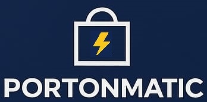
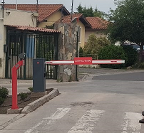
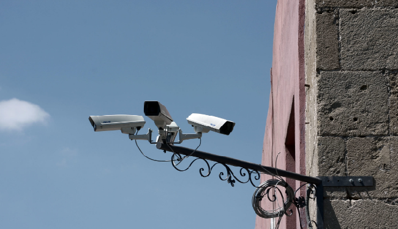
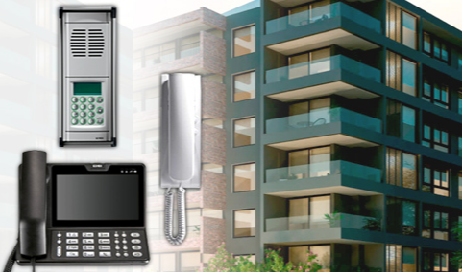
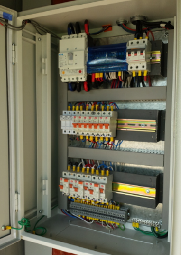
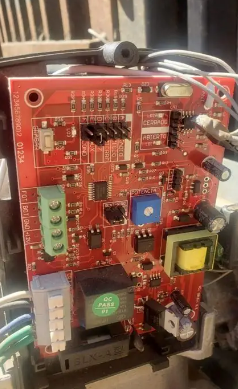
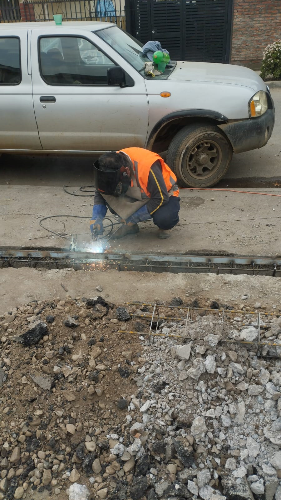
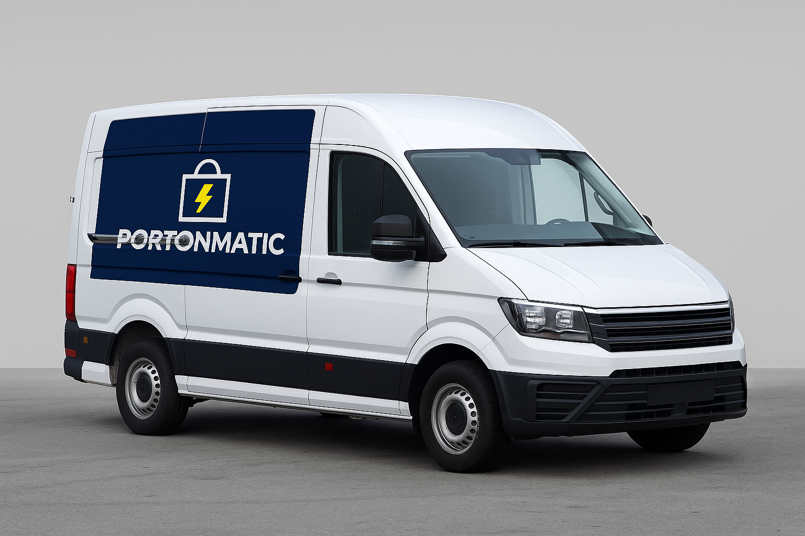

AUTOMATIZACIÓN DE PORTONES
Soluciones integrales para tu comunidad - Instalación y reparación de sistemas de seguridad perimetral.
📍 Atención en Región Metropolitana y Provincias.
Consultar por WhatsApp Solicitar evaluación ¿Tu pasaje se puede cerrar legalmente?Somos una empresa chilena orientada al desarrollo e implementación de soluciones de seguridad para condominios, comunidades residenciales, pasajes y propiedades particulares.
Integramos tecnología, automatización y servicios técnicos para mejorar la seguridad, facilitar el control de accesos y contribuir a la protección de las personas y sus bienes.
Nuestro enfoque es entregar soluciones adaptadas a las necesidades de cada proyecto, desde la automatización de portones y los sistemas de videovigilancia hasta la instalación de cercos perimetrales, citofonía, iluminación y otros servicios complementarios.
En PortónMatic, trabajamos para que tus accesos sean más seguros, funcionales y confiables.
¿Necesitas automatizar tu portón o resolver un problema? Cuéntanos qué necesitas y te orientaremos.
Si no sabes qué tipo de motor necesitas, responde estas preguntas y te orientaremos.

Instalación y reparación de barreras de acceso, controles remotos, fotoceldas y apertura mediante celular.
Instalación de cámaras de seguridad y sistemas DVR
Implementación de sistemas de citofonía y videoporteros
Configuración de sistemas de respaldo eléctrico, certificados, para mantener el acceso operativo ante cortes de energía.
Automatización, programación y servicio técnico de motores para portones.
Clientes
Móvil de respuesta 24/7